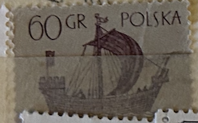
| SOURCE | TITLE| IMAGE MATCH | click to source page |
| Find Your Stamps Value | Ancient Ships: 14th century “Holk” 1z Black, Blue stamp price, value |  |
| eBay | Poland Polska Yvert 1246 Used Stamp Boats VF | eBay | 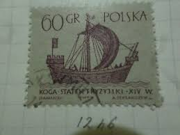 |
| Colnect | Stamp: Frisian "Kogge" (14th Cent.) (Poland(Sailing Ships (1st series)) Mi:PL 1388,Sn:PL 1129,Yt:PL 1246,Sg:PL 1375,AFA:PL 1277,Pol:PL 1240 📮 | 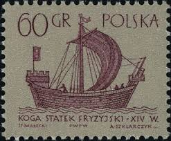 |
| eBay | Ships, Boats Polish Stamps for sale | eBay | 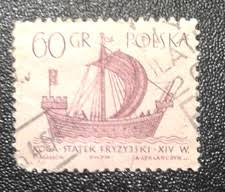 |
| stampsandstuff.net | Stamps from Poland 1960-1969 | 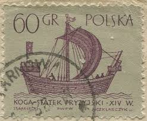 |
| Dreamstime.com | 394 Circa 1950s Stock Photos - Free & Royalty-Free Stock Photos from Dreamstime | 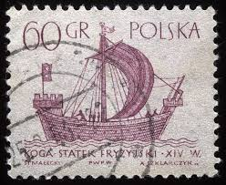 |
| HipStamp | Poland 1129 1963 Used | Europe - Poland, General Issue Stamp / HipStamp |  |
| Find Your Stamps Value | Value of polska koga statek 60 gr stamps | 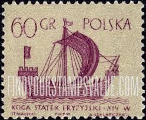 |
| eBay.de | Ungeprüfte Briefmarken aus Polen mit Schiffs-und Boots-Motiv online kaufen | eBay.de | 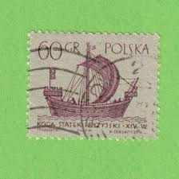 |
| Shutterstock | Poland Circa 1963 Stamp Printed Poland Stock Photo 87925894 | Shutterstock | 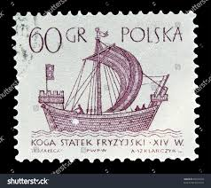 |
| Dreamstime.com | Medieval Ship Stamp Stock Photos - Free & Royalty-Free Stock Photos from Dreamstime |  |
| Polska6.pl | Znaczki Polska6.pl - Sklep filatelistyczny | 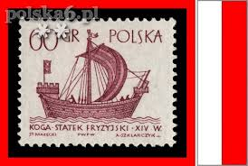 |
| Amazon.com | Amazon.com: Used Poland Stamp (1965) Third Century Merchant Ship - Scott# 1302 : Toys & Games | 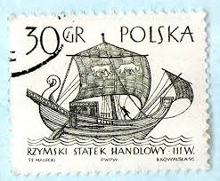 |
| Seemotive | Seemotive, Hanse Kogge | 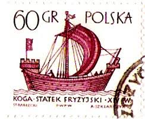 |
| Flickr | Poland 1963 60 Grosz (Scott PL1129 A398) | An image portrayi… | Flickr | 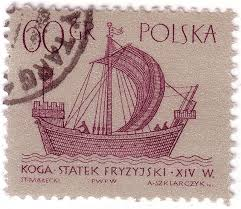 |
| Shutterstock | Moscow Russia Circa January 2016 Post Stock Photo 370826444 | Shutterstock | 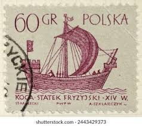 |
| Katalog Polskich Znaczków Pocztowych | Statki żaglowe - 1240 - Katalog Polskich Znaczków Pocztowych | 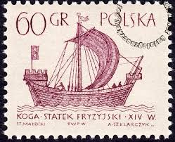 |
| Dreamstime.com | Frisian Kogge Stock Photos - Free & Royalty-Free Stock Photos from Dreamstime | 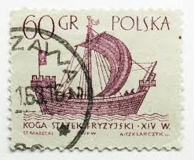 |
| Dreamstime.com | Phoenician Merchant Stock Photos - Free & Royalty-Free Stock Photos from Dreamstime | 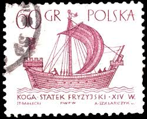 |
| Todocolección | polonia 2662** - año 1983 - 150º aniversario de - Acheter Timbres anciens de Pologne sur todocoleccion | 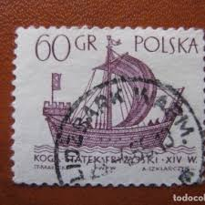 |
| sellosmundo.com | Sello: BARCO ANTIGUO 60 GR violetade Polonia Europa | 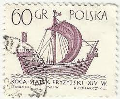 |
| Shutterstock | Poland Circa 1950s Vintage Postage Stamp Stock Photo 87035867 | Shutterstock | 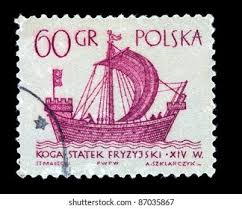 |
| Shutterstock | 19 A398 Royalty-Free Images, Stock Photos & Pictures | Shutterstock | 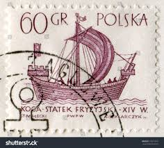 |
| Philatelists!! I hope you're having a Pleasant day. It's the letter P in the a-z of Boats/Ships on Stamps. These are my Personal Picks, Please share yours too. Pitcairn Islands Poland Portugal # | 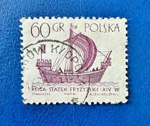 | |
| Shutterstock | Poland Circa 1965 Postage Stamp Printed Stock-foto 125212610 | Shutterstock | 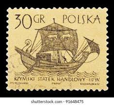 |
| All Numis | Stamps Catalog - List of stamps for Transportation-Ships, boats, Poland - page 5 | 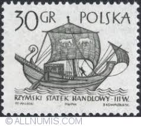 |
| Dreamstime.com | A Vintage Postage Stamp from Poland. Editorial Stock Photo - Image of europe, philatelic: 396188948 | 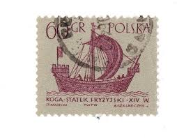 |
| Rakuten | Timbre Polska 60 Gr pas cher - Meilleures offres sur le neuf et l'occasion | 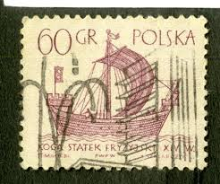 |
| Мешок | дракар | 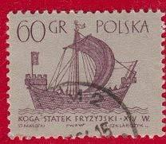 |
| Pngtree | 弗里斯蘭馬照片，免費下載圖片素材- Pngtree圖庫 | 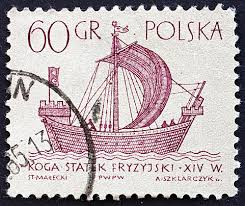 |
| Osta | 29-22 varia poola laevad (247127777) - Osta.ee | 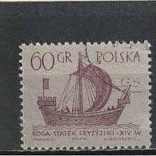 |
| Shutterstock | 7+ Thousand 1966 Print Royalty-Free Images, Stock Photos & Pictures | Shutterstock | 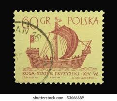 |
| esam.ir | تمبر کلاسیک لهستان | 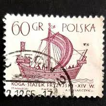 |
| Violity | Польские почтовые марки (110083643) - buy on Violity | 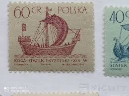 |
| LiveJournal | Паруса. Польша. Серии стандартных марок с парусниками.: all_collector — LiveJournal | 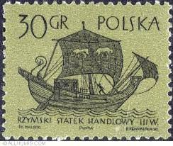 |
| 麦稀奇 | 邮票- 泡泡堂外币- 泡泡堂外币- 麦稀奇 | 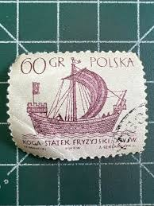 |
| Shutterstock | Egyptian Stamps: Over 1,446 Royalty-Free Licensable Stock Photos | Shutterstock | 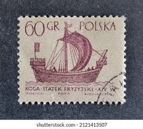 |
| Katalog Polskich Znaczków Pocztowych | Statki żaglowe - 1239 - Katalog Polskich Znaczków Pocztowych | 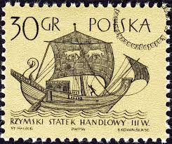 |
| Osta | Poola " LAEVAD " 1963 (247183540) - Osta.ee | 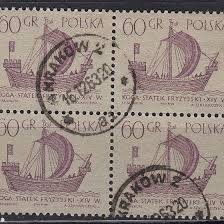 |
| Osta.ee | i732 varia leiunurk (247817807) - Osta.ee | 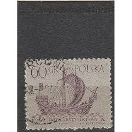 |
| Alamy | Ancient roman ship hi-res stock photography and images - Alamy | 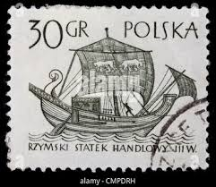 |
| Мешок - торговая площадка | КОРАБЛИ КОРАБЛЬ НОВГОРОДЦЕВ С РУБЛЯ» на Мешке #корабль по возрастанию цены | 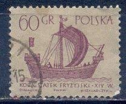 |
| Old-Stamps.com | Holk - Statek Handlowy XIV W. / Polska 1963 | 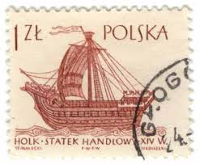 |
| Past Cart | polska stamp 1ZL – Past Cart | 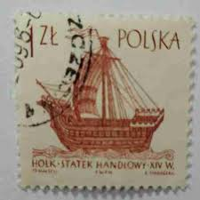 |
| eBay | Briefmarke: Serie Alle Welt: 60 Gr, Polska | eBay | 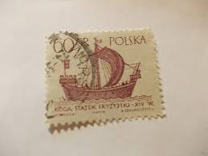 |
| eBay UK | KOGA - STATEK FRYZJSKI . XIV W. Poland stamp - 1965 Sailing Boats 60Gr | eBay UK | 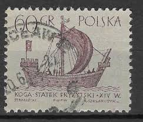 |
| iStock | Stamp Showing Ancient Hulk Ship Stock Photo - Download Image Now - Backgrounds, Correspondence, Horizontal - iStock | 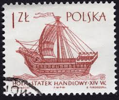 |
| Dreamstime.com | Century Holk Stock Photos - Free & Royalty-Free Stock Photos from Dreamstime | 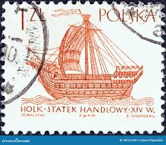 |
| Дракопанда | Парусные корабли (3-я серия). Фризский Когг (XIV в.). Корабли. Польша. 1965. Михель: PL 1567. Гашен | Дракопанда | 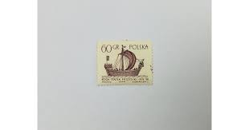 |
| Hakan Yavuz (hakanyavuz9026) – Profile | Pinterest | 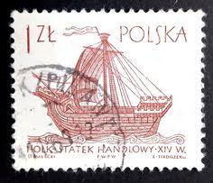 | |
| Todocolección | 45314 mnh polonia 1944 motivos varios - Compra venta en todocoleccion | 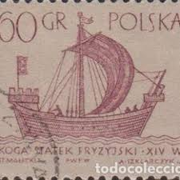 |
| UNC.UA | Марки из серии Парусник. Польша. купить на | Аукціон для колекціонерів UNC.UA UNC.UA | 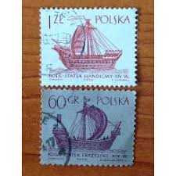 |
| Todocolección | polonia ivert nº 1246, frisian kogge, barco ant - Compra venta en todocoleccion | |
| Todocolección | 659729 mnh polonia 2017 organo historico de la - Compra venta en todocoleccion | |
| esam.ir | مجموعه تمبر کلاسیک خارجی کد 2680 | |
| DBA.dk | Polen, stemplet, Særfrimærke | DBA | |
| eBay UK | POLAND 1963 1z SG1376 used NG Sailing Ships 1st series Holk b #C03 | eBay UK | |
| Shutterstock | 17+ Thousand Circa Poland Royalty-Free Images, Stock Photos & Pictures | Shutterstock | |
| eBay UK | POLAND 1965 1z chestnut SG1457 used FG Sailing Ships 2nd series Holk b ##W27 | eBay UK | |
| Find Your Stamps Value | Value of polska 20 gr ship stamps |